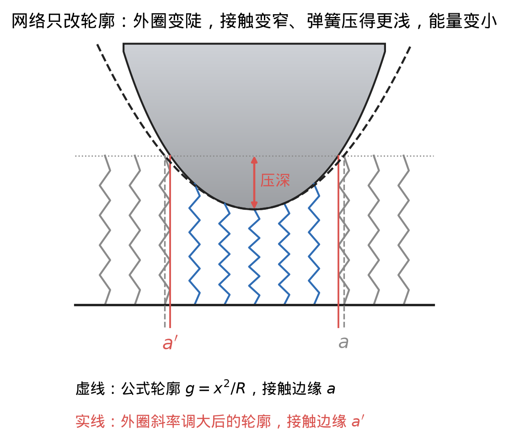
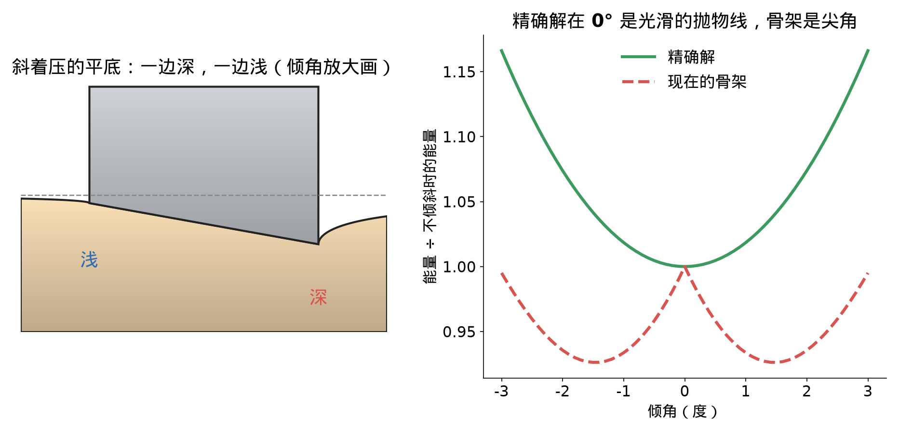
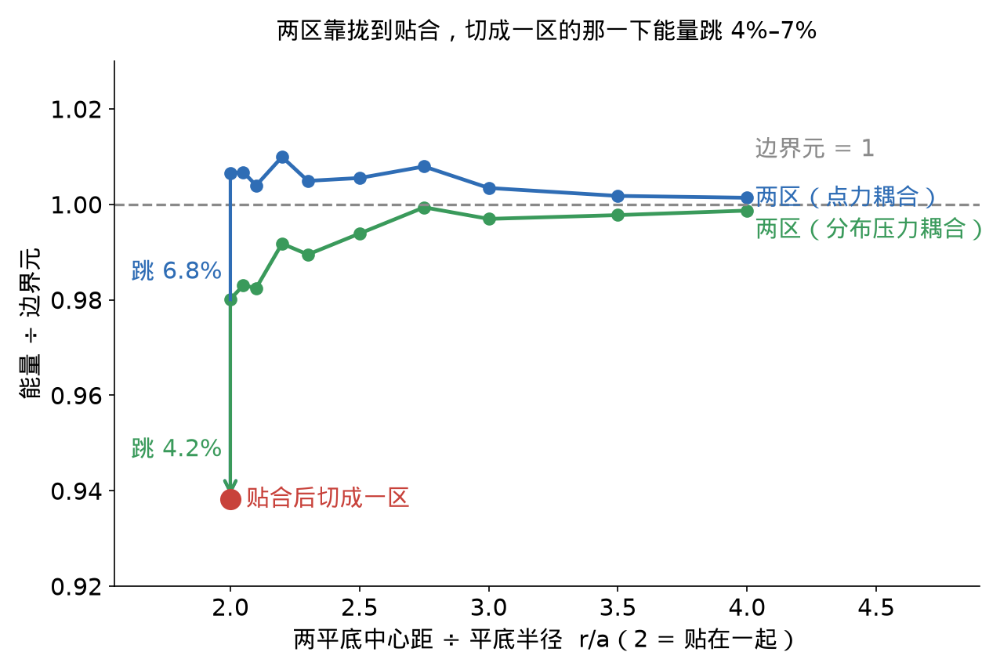

Week 3–4（第 3–4 周）
要学的碰撞能量；两个软物体相碰的解析解（降维法、Hertz）；标签对解析解与独立裁判；hydro、hydro++ 与死结，Genesis 中 hydro 实测；网络结构与多接触区耦合；接进引擎、体力法造标签、试训与椭圆骨架；待定事项。
本页结论：hydro++ 给不出接触间的相互影响；我的模型公式为主、网络修轮廓，理想场景已很准；非理想情况要统一几种精确极限；与 Huanyu 的方案互补。
要学的是什么
-
粗模型用几个数 \(z\) 描述物体（刚体 6 个），碰上会穿进去；要学的是真实物体凹陷里的弹性能：
\[\color{#c0392b}{U_c(z)=\min_{w}\ \Pi(\Phi z+\Psi w)-\Pi(\Phi z)}\]
\(\Phi z\) 粗形状，\(\Psi w\) 局部变形，\(\Pi\) 弹性能，\(\min_w\) 在不穿透下取。穿得越深越大，力是它的导数。

- 粗状态下的重叠深度即压深 \(\delta\)，两表面形状给出缝隙 \(h\)，下文都用它们；标签由 IPC 加精细有限元算。
hydro++ 能做什么、不能做什么
-
hydro 即 hydroelastic 接触模型（Drake 在用）：每个物体预先画一张压力场，每点只看自己离表面多深；重叠区取较小压力积分：
\[\color{#c0392b}{U^{\text{hydro}}=\int_{\Omega}\min(p_A,p_B)\,dV}\]
\(\Omega\) 重叠区，\(p_A\)、\(p_B\) 两物体的压力场。
- hydro++：保留「每个物体一张与对手无关的场」这一定义，形状完全由数据拟合。
例一：没见过的组合学不会
- 15 个物体两两配对，答案用解析解算，部分配对拟合、其余测试。

- 见过的配对误差百万分之几；没见过的组合单起点拟合 12%，多起点复核中更大。真实能量是两侧量先相加、再非线性组合（\(E^*\) 是两侧柔度相加后取倒数），「取较小压力积分」给不出这种组合，只能逐对背。
例二：接触之间的相互影响
-
两个平底压头：① 单压 P，② 单压 Q，③ 一起压。hydro++ 重叠区直接拼起来，\(U^{\text{hydro}}_③=U^{\text{hydro}}_①+U^{\text{hydro}}_②\)；真实物体里 P 把 Q 底下带低，要打折：
\[\color{#c0392b}{U_③=c\,(U_①+U_②),\qquad c=\frac{1}{1+\dfrac{2a}{\pi r}}}\]
\(a\) 平底半径，\(r\) 中心距，越近 \(c\) 越小。\(r=4a\) 时公式 0.863，边界元（表面网格精确解）0.861。

推导：hydro++ 只能相加
两个压头离得开时，一起压的重叠区由两块互不相交的部分组成：
\[\Omega_③=\Omega_①\cup\Omega_②,\qquad \Omega_①\cap\Omega_②=\varnothing.\]
场固定在物体上，所以重叠区里每一点的被积函数 \(\min(p_A,p_B)\) 在 ③ 与在 ①（或 ②）中相同。积分区域拆成两块：
\[\begin{aligned}U^{\text{hydro}}_③&=\int_{\Omega_①\cup\Omega_②}\min(p_A,p_B)\,dV=\int_{\Omega_①}\min(p_A,p_B)\,dV+\int_{\Omega_②}\min(p_A,p_B)\,dV\\&=U^{\text{hydro}}_①+U^{\text{hydro}}_②.\end{aligned}\]
推导：c 从哪里来
条件：表面一点受力 \(F\) 时距离 \(r\) 处下沉 \(u(r)=F/(\pi E'r)\)（\(E'=E/(1-\nu^2)\) 是被压物体的有效硬度，\(E\) 杨氏模量，\(\nu\) 泊松比）；半径 \(a\) 的平底压入 \(\delta\) 需要力 \(F_1=2E'a\delta\)。
-
单个平底受力 \(F\) 时自己要压的深度是
\[\delta_e(F)=\frac{F}{2E'a}.\]
-
一起压时每个平底受力 \(F\)。每个平底的压深 = 自己压的 + 对方把表面带下去的；对方离得远，看成点力，带下去 \(F/(\pi E'r)\)：
\[\delta=\frac{F}{2E'a}+\frac{F}{\pi E'r}.\]
-
提出 \(\dfrac{F}{2E'a}\)：
\[\delta=\frac{F}{2E'a}\Big(1+\frac{2a}{\pi r}\Big).\]
-
两边乘 \(2E'a\)，再除以 \(1+\dfrac{2a}{\pi r}\)：
\[F=\frac{2E'a\,\delta}{1+\dfrac{2a}{\pi r}}.\]
-
平底的力与压深成正比（刚度 \(K=F/\delta\)），压入过程中压深记作 \(\delta'\)，压到 \(\delta\) 存的能量是
\[U=\int_0^\delta K\,\delta'\,d\delta'=\tfrac12K\delta^2=\tfrac12F\delta.\]
-
① 与 ② 各自单独压时 \(U_①=U_②=\tfrac12F_1\delta\)；③ 里两个平底各存 \(\tfrac12F\delta\)。压深相同，所以
\[c=\frac{U_③}{U_①+U_②}=\frac{2\cdot\tfrac12F\delta}{2\cdot\tfrac12F_1\delta}=\frac{F}{F_1}=\frac{2E'a\delta\big/\big(1+\frac{2a}{\pi r}\big)}{2E'a\delta}=\frac{1}{1+\dfrac{2a}{\pi r}}.\]
-
一个相加、一个打折，所以不管场怎么取，最大相对误差
\[\color{#c0392b}{\varepsilon\ \ge\ \frac{1-c}{1+c}}\]
代入 \(c=0.861\) 得 7.49%；三张场自由拟合停在 7.56%，与下界一致。
推导：误差下界
-
三种情况的相对误差都不超过 \(\varepsilon\)：
\[(1-\varepsilon)\,U_①\le U^{\text{hydro}}_①\le(1+\varepsilon)\,U_①,\]
② 与 ③ 同样。
-
对 ① 和 ② 取左边的不等式再相加：
\[(1-\varepsilon)(U_①+U_②)\le U^{\text{hydro}}_①+U^{\text{hydro}}_②.\]
-
左边换成 hydro++ 的可加性 \(U^{\text{hydro}}_①+U^{\text{hydro}}_②=U^{\text{hydro}}_③\)，再对 ③ 取右边的不等式，并代入 \(U_③=c(U_①+U_②)\)：
\[(1-\varepsilon)(U_①+U_②)\le U^{\text{hydro}}_③\le(1+\varepsilon)\,c\,(U_①+U_②).\]
-
两边除以 \(U_①+U_②>0\)：
\[1-\varepsilon\le c+c\,\varepsilon.\]
-
移项：
\[1-c\le\varepsilon\,(1+c)\ \Longrightarrow\ \varepsilon\ge\frac{1-c}{1+c}.\]
-
代入 \(c=0.861\)：
\[\varepsilon\ge\frac{1-0.861}{1+0.861}=\frac{0.139}{1.861}=7.49\%.\]
- 小结： hydro++ 能背见过的配对，不能给出相互影响和新组合。由此两条要求：① 主体由缝隙和合成硬度决定，剩余修正再看两侧；② 接触间要有相互影响。（hydro「每点只看自己」恰是薄层行为，见第 4 节。）
场各自固定在单个物体上，hydro++ 多处接触只能相加，两压头算例上至少错 7.49%。
我的软–软模型
骨架：两软体 → 刚体压软平面 → 一排弹簧
-
条件： 接触区远小于物体、变形小、无摩擦。结论： 两软体 = 形状为缝隙 \(h\) 的刚体压合成硬度 \(E^*\) 的软平面：
\[\color{#c0392b}{h=f_A+f_B,\qquad \frac1{E^*}=\frac{1-\nu_A^2}{E_A}+\frac{1-\nu_B^2}{E_B}}\]
\(f_A\)、\(f_B\) 两表面弯离切平面的高度；\(E\) 杨氏模量，\(\nu\) 泊松比，任一侧变软 \(E^*\) 都变小。
推导：两个软体 → 刚体压软平面
- 两侧在接触面上受同一个压力 \(p(\mathbf x)\)（作用与反作用）。
-
每侧表面的下沉：在一点按一下周围都跟着陷，陷的量与距离成反比（点力下沉 \(u(r)=F/(\pi E'r)\)）；各处的下陷直接相加，就是把点力换成每一小块面积上的力 \(p(\mathbf x')\,d\mathbf x'\) 再积分。对 \(i=A,B\)：
\[u_i(\mathbf x)=\frac{1}{E_i'}\cdot\frac1\pi\int\frac{p(\mathbf x')}{|\mathbf x-\mathbf x'|}\,d\mathbf x',\qquad E_i'=\frac{E_i}{1-\nu_i^2}.\]
-
两物体远处推近 \(\delta\)。不变形时接触区里每一处会穿入 \(\delta-h(\mathbf x)\)；实际两侧各凹一点，合起来正好让出来：
\[u_A(\mathbf x)+u_B(\mathbf x)=\delta-h(\mathbf x)\qquad(\mathbf x\ \text{在接触区内}).\]
-
把第 2 步对 A、B 各写一次，代入第 3 步：
\[\frac{1}{E_A'}\cdot\frac1\pi\int\frac{p(\mathbf x')}{|\mathbf x-\mathbf x'|}\,d\mathbf x'+\frac{1}{E_B'}\cdot\frac1\pi\int\frac{p(\mathbf x')}{|\mathbf x-\mathbf x'|}\,d\mathbf x'=\delta-h(\mathbf x).\]
-
合并系数：
\[\Big(\frac{1}{E_A'}+\frac{1}{E_B'}\Big)\cdot\frac1\pi\int\frac{p(\mathbf x')}{|\mathbf x-\mathbf x'|}\,d\mathbf x'=\delta-h(\mathbf x).\]
-
记 \(\dfrac1{E^*}=\dfrac1{E_A'}+\dfrac1{E_B'}=\dfrac{1-\nu_A^2}{E_A}+\dfrac{1-\nu_B^2}{E_B}\)：
\[\frac{1}{E^*}\cdot\frac1\pi\int\frac{p(\mathbf x')}{|\mathbf x-\mathbf x'|}\,d\mathbf x'=\delta-h(\mathbf x).\]
这正是「形状为 \(h\) 的刚体压硬度为 \(E^*\) 的软平面」的方程。
-
降维法（Popov）： 轴对称时换成一维等效轮廓 \(g\) 压一排独立弹簧（刚度 \(E^*\)），与三维精确解相同：
\[\color{#c0392b}{\begin{aligned}&g(x)=|x|\int_0^{|x|}\frac{h'(r)}{\sqrt{x^2-r^2}}\,dr,\qquad g(a)=\delta,\\&U_0=E^*\int_0^a\big(\delta-g(x)\big)^2dx\end{aligned}}\]
\(x\) 弹簧位置，\(h'(r)\) 缝隙斜率，\(a\) 接触边缘，\(\delta-g\) 每根弹簧的压缩量。\(U_0\) 是 \(U_c\) 的解析近似，自带「力是能量导数」「越压越硬」；球代入得 Hertz \(U_H=\tfrac{8}{15}E^*\sqrt R\,\delta^{5/2}\)。

推导：降维法的力、等效轮廓和能量
第一步：平底的解（已知）。 半径 \(\tilde a\) 的刚性平底压入 \(\delta\)，力和平底外 \(r\) 处的表面下沉分别为
\[F_{\text{平底}}=2E^*\tilde a\,\delta,\qquad u(r)=\frac{2\delta}{\pi}\arcsin\frac{\tilde a}{r}\quad(r>\tilde a).\]
第二步：把一般压入拆成一串平底。 接触半径为 \(\tilde a\) 时再多压 \(d\tilde\delta\)，相当于半径 \(\tilde a\) 的平底多压 \(d\tilde\delta\)。记 \(\tilde\delta=g(\tilde a)\)，则 \(d\tilde\delta=g'(\tilde a)\,d\tilde a\)，最后 \(\delta=g(a)\)。各步的力相加并分部积分：
\[F=\int_0^a2E^*\tilde a\,g'(\tilde a)\,d\tilde a=2E^*\Big[\tilde a\,g(\tilde a)\Big]_0^a-2E^*\int_0^ag(\tilde a)\,d\tilde a=2E^*\,a\,\delta-2E^*\int_0^ag(\tilde a)\,d\tilde a.\]
把 \(a\delta\) 写成 \(\int_0^a\delta\,dx\)：
\[F=2E^*\int_0^a\big(\delta-g(x)\big)dx.\]
第三步：用接触边缘的贴合条件定出 \(g\)。 \(r=a\) 处要让出的量 \(\delta-h(a)\) 等于各步平底在那里造成的下沉之和：
\[\delta-h(a)=\frac2\pi\int_0^a\arcsin\frac{\tilde a}{a}\;g'(\tilde a)\,d\tilde a.\]
分部积分：
\[\frac2\pi\int_0^a\arcsin\frac{\tilde a}{a}\,g'(\tilde a)\,d\tilde a=\frac2\pi\Big[\arcsin\frac{\tilde a}{a}\,g(\tilde a)\Big]_0^a-\frac2\pi\int_0^a\frac{g(\tilde a)}{\sqrt{a^2-\tilde a^2}}\,d\tilde a.\]
边界项：\(\tilde a=a\) 时 \(\arcsin1=\pi/2\)、\(g(a)=\delta\)，\(\tilde a=0\) 时为 0，所以边界项等于 \(\delta\)。代回：
\[h(a)=\frac2\pi\int_0^a\frac{g(\tilde a)}{\sqrt{a^2-\tilde a^2}}\,d\tilde a.\]
这对每个 \(a\) 都成立，是关于 \(g\) 的 Abel 积分方程，解为
\[g(x)=|x|\int_0^{|x|}\frac{h'(r)}{\sqrt{x^2-r^2}}\,dr.\]
（核对：代回右边，交换积分次序后内层积分为 \(\int_r^a\frac{\tilde a\,d\tilde a}{\sqrt{a^2-\tilde a^2}\sqrt{\tilde a^2-r^2}}=\frac\pi2\)，右边化为 \(\int_0^ah'(r)\,dr=h(a)\)。）
第四步：能量。 对 \(U_0=E^*\int_0^a(\delta-g)^2dx\) 求导，上限 \(a\) 随 \(\delta\) 变：
\[\frac{dU_0}{d\delta}=E^*\big(\delta-g(a)\big)^2\frac{da}{d\delta}+E^*\int_0^a2\big(\delta-g(x)\big)dx=0+F.\]
又 \(\delta=0\) 时 \(U_0=0\)，所以 \(U_0\) 就是外力做的功，即弹性能。
越压越硬： 对 \(F\) 求导，上限处 \(\delta-g(a)=0\)：
\[\frac{dF}{d\delta}=2E^*\big(\delta-g(a)\big)\frac{da}{d\delta}+2E^*\int_0^a1\,dx=2aE^*.\]
推导：球 → Hertz
-
缝隙。 半径 \(R_i\) 的球离接触中心 \(r\) 处比最低点高 \(f_i\)，由直角三角形 \(r^2+(R_i-f_i)^2=R_i^2\)，略去 \(f_i^2\) 得 \(f_i\approx r^2/(2R_i)\)。两侧相加：
\[h=\frac{r^2}{2R_A}+\frac{r^2}{2R_B}=\frac{r^2}{2R},\qquad\frac1R=\frac1{R_A}+\frac1{R_B}.\]
-
等效轮廓。 \(h'(r)=r/R\)：
\[g(x)=\frac{|x|}{R}\int_0^{|x|}\frac{r}{\sqrt{x^2-r^2}}\,dr=\frac{|x|}{R}\Big[-\sqrt{x^2-r^2}\Big]_0^{|x|}=\frac{x^2}{R}.\]
-
接触半径。 \(g(a)=\delta\Rightarrow a=\sqrt{R\delta}\)。
-
力。
\[\begin{aligned}F&=2E^*\int_0^a\Big(\delta-\frac{x^2}{R}\Big)dx=2E^*\Big(a\delta-\frac{a^3}{3R}\Big)\\&=2E^*\Big(\sqrt R\,\delta^{3/2}-\frac13\sqrt R\,\delta^{3/2}\Big)=\frac43E^*\sqrt R\,\delta^{3/2}.\end{aligned}\]
-
能量。 力对压深积分（\(\delta'\) 是压入过程中的压深）：
\[U_H=\int_0^\delta\frac43E^*\sqrt R\,\delta'^{3/2}\,d\delta'=\frac43E^*\sqrt R\cdot\frac25\delta^{5/2}=\frac{8}{15}E^*\sqrt R\,\delta^{5/2}.\]
- 椭圆： 比如球压游泳圈内圈。骨架按等面积圆算，再乘 \(F_U(e)\) = 椭圆 Hertz 能量 ÷ 等面积圆能量（\(e\) 为两方向曲率比的对数）；两者随硬度、压深、尺寸的变化相同，比值只看 \(e\)。不乘少算 2.4%。

- 多处接触： 每处压深 = 自己压的 + 别处按 \(F_j/(\pi E'r_{ij})\) 带下去的，即例二与边界元一致的打折公式，不经过网络。
网络修什么
- 合成硬度相同的两组，标签 ÷ Hertz：硬压头压软块（1e6/1e5）1.000–1.007，软压头压硬块（1e5/1e6）0.976–0.986。软在哪侧结果不同，所以剩余修正要看两侧各自的量。

- 做法： 网络给轮廓每处斜率乘一个正数，能量仍由弹簧算。比如软压头低于 Hertz，网络就调大外圈斜率：接触变窄，能量降下来。

- 输入： 两侧各自的曲率占比、软度占比、泊松比、到边缘距离，加位置和扁度；不输入压深。497 个参数。

结果
- 留一法（拿掉一个构型、用其余训练再预测它），68 个标签：
| 方法 | 参数 | 误差中位数 | 最大误差 |
|---|---|---|---|
| 只用骨架 | 0 | 0.44% | 2.47% |
| 骨架 × 简单公式 | 2 | 0.36% | 0.98% |
| 骨架 + 网络（3 个种子中位数） | 497 | 0.21% | 1.05% |
- 骨架已很准，网络空间不大；它要学的是公式管不到的情况。
设置：简单公式为 能量 × exp(c₁·压头软度占比·接触半径 / 压头球冠半径 + c₂·压深 / 等效半径)，把软压头组修到 0.6%；网络三个种子的最大误差 1.05%、2.57%、1.05%；留一拿掉的是整个构型（含曲面块）。
骨架在理想场景误差中位数 0.44%；网络只调轮廓斜率、不看压深，降到 0.21%。
理想情况之外：在精确极限之间搭桥
骨架管不到的三种情况
- 骨架假设物体无限厚、接触区一整块且左右对称。
- ① 薄层（软垫、皮肤）：底座让它硬得多，骨架没有层厚，只算出一到两成。
- ② 斜压平底： 骨架把倾斜读成「最深处更深、边上一圈很浅」，丢了哪边深，少算约 15%，0° 有尖角、冒出假力矩。

- ③ 两处连成一片： 从「两处 + 相互影响」切成「一处」，能量跳一下。

以薄层为例：两头精确，中间都不准
-
很厚时 Hertz 精确；很薄时每点是独立竖直弹簧（hydro 的行为）：
\[\color{#c0392b}{U_{\text{薄}}=\frac{\pi kR\,\delta^3}{3}}\]
\(k\) 单位面积刚度（层越薄越大），\(R\) 球半径；压深加倍能量变 8 倍，厚块只 5.7 倍。
推导：薄层能量
条件：每点压缩量 \(q\)、压强 \(p=kq\)、球的缝隙 \(r^2/(2R)\)。
-
离中心 \(r\) 处的压缩量：
\[q(r)=\delta-\frac{r^2}{2R}.\]
-
接触边缘是 \(q=0\) 处：
\[a^2=2R\delta.\]
-
每块面积上的弹簧存能 \(\tfrac12k\,q^2\,dA\)，取圆环 \(dA=2\pi r\,dr\)：
\[U=\int_0^a\tfrac12k\,q^2\,2\pi r\,dr=\pi k\int_0^a\Big(\delta-\frac{r^2}{2R}\Big)^2r\,dr.\]
-
换元 \(\tau=r^2/(2R)\)，\(r\,dr=R\,d\tau\)，\(\tau\) 从 0 到 \(\delta\)：
\[U=\pi kR\int_0^\delta(\delta-\tau)^2\,d\tau.\]
-
\(\int_0^\delta(\delta-\tau)^2d\tau=\Big[-\tfrac13(\delta-\tau)^3\Big]_0^\delta=\tfrac13\delta^3\)：
\[U=\frac{\pi kR\,\delta^3}{3}.\]

设置：刚球压粘在刚性底座上的层，泊松比 0.3，轴对称有限元；Hertz 误差在接触区 ÷ 层厚 = 0.1 / 1 / 3 时为 −7.4% / −60% / −86%，薄层公式为 −78% / −3.7% / +0.9%。
统一结构：方格弹簧床
-
接触面切成方格，每格按穿入深度是一根弹簧，第 3 节的「相互影响」推广到格与格：不牵连是薄层（hydro 端），按 1/距离 是厚物体（现骨架端），有限厚层近处 1/距离、远处截断，称层核，有精确公式。
\[\color{#c0392b}{U(o)=\max_{p\ge0}\Big[\sum_mp_m\,o_m-\frac12\sum_{m,n}p_m\,C_{mn}\,p_n\Big]}\]
\(o_m\) 第 \(m\) 格穿入深度，\(p_m\) 压强，\(C_{mn}\) 格 \(n\) 受单位压强时格 \(m\) 的下沉。取最大值的 \(p\) 即真实压强；对 \(o_m\) 求导就是压强，且越压越硬。
推导：弹簧床的能量
- 记 \(f(p)=\sum_mp_mo_m-\tfrac12\sum_{m,n}p_mC_{mn}p_n\)。\(C\) 对称正定（任何不为零的压强分布都要付出正的弹性能），所以 \(f\) 严格凹，在 \(p\ge0\) 上的最大值点 \(p^\star\) 唯一。
-
最大值点满足：
\[o_m-\sum_nC_{mn}p_n^\star\le0,\qquad p_m^\star\ge0,\qquad p_m^\star\Big(o_m-\sum_nC_{mn}p_n^\star\Big)=0.\]
-
记 \(u_m=\sum_nC_{mn}p_n^\star\) 为第 \(m\) 格的下沉。第 2 步就是：\(u_m\ge o_m\)（不穿透）；\(p_m^\star\ge0\)（只能推）；有压强的格子刚好贴住。这正是接触条件，所以 \(p^\star\) 是真实压强。
-
由第 2 步第三式，\(p_m^\star o_m=p_m^\star u_m\)，求和：
\[\sum_mp_m^\star o_m=\sum_{m,n}p_m^\star C_{mn}p_n^\star.\]
-
代入 \(f\)：
\[U=f(p^\star)=\sum_{m,n}p_m^\star C_{mn}p_n^\star-\frac12\sum_{m,n}p_m^\star C_{mn}p_n^\star=\frac12\sum_mp_m^\star u_m,\]
即线弹性表面存的弹性能。
-
\(p^\star\) 是最优点，它的变化不引起一阶变化，所以
\[\frac{\partial U}{\partial o_m}=\frac{\partial f}{\partial o_m}\Big|_{p=p^\star}=p_m^\star.\]
-
\(U\) 是一族 \(o\) 的线性函数的最大值，所以是凸函数：穿得越深，能量涨得越快。
- 斜压时每格知道多深，力矩自然对；两处靠近时中间格子逐渐接触，能量不跳。

- 网络（设计）： 输出衰减曲线，两头钉住只改中间；输入下方多厚、泊松比、底面条件；轮廓修正留在每格。
- 速度： 每个接触区双精度约 54 µs，现骨架 26 µs，慢约一倍；斜压很浅时窄月牙要局部加密。
设置：54 / 26 µs 为 1024 个接触区批量求解摊到每区，共享 GPU，不含二阶导；单精度时 31 µs。
方格弹簧床把薄层和厚物体两个精确极限钉在两头，网络只学中间的过渡，斜压和连成一片也随之解决。
Huanyu 的方案与我的方案
| Huanyu 的方案 | 我的方案 | |
|---|---|---|
| 物体 | 两个有限大球 | 被压块取得足够大，等效无限大 |
| 骨架 | Hertz 能量 × 网络因子 | 降维法 / 椭圆 Hertz，网络调轮廓 |
| 参数量 | 约 9900 | 497 |
| 压深输入网络 | 是；训练范围外输出不可靠，小压深端关掉修正 | 否，越压越硬由结构保证 |
| 多处接触相互影响 | 无 | 有（已实现，尚未训练） |
| 有限大物体、预应变 | 有 | 无 |
- 两边数据不同，还没在同一组数据上比精度。我的能跨形状推广，Huanyu 的覆盖有限大物体和预应变。
两个方案覆盖的情况不同，可以合起来用。
想讨论的
- 方格弹簧床作为下一阶段主线是否合适？
- 有限大物体整体被压扁的部分只和自身形状有关，可单独预算；能否用 Huanyu 的数据检验它，并同数据比精度？
- 每个接触区每次牛顿迭代多少时间可接受？
- 先接进 libuipc（Genesis 底层的 GPU IPC 求解器）跑动力学，还是先做过渡区？